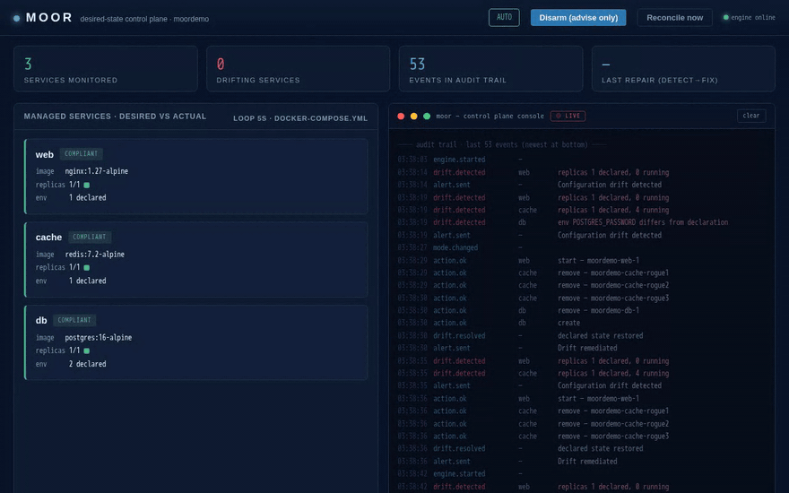

Moor diffs the real Docker Engine API against your docker-compose.yml, classifies every divergence as drift or intended change, alerts in Slack-webhook format, and in auto mode repairs the environment in seconds — every action written to an immutable audit trail. No mock code. No simulations.
One take, no cuts, no synthetic events. Every click of the dashboard's ⚡ Inject drift button performs one real Docker mutation.

The button is clicked four times: a killed container, a rogue scale-up, a mutated env var, another rogue scale-up.
The console window streams the real audit trail as auto mode detects and repairs each drift
(one drift needs a retry after the engine's backoff — and still converges).
Prefer the terminal? make chaos or moor chaos [kill|scale|env|image|random] is the console twin:
same API endpoint, same real Docker mutations, same audit trail.
One control loop, six containers, every arrow real. The same OBSERVE → DIFF → PLAN → ACT loop Kubernetes runs — pointed at Docker.
┌──────────────────────────────────────────────────────────────────────────────────┐ │ │ │ docker-compose.yml (the declaration, mounted read-only) │ │ image · replicas · env · command · ports per managed service │ │ │ │ │ ▼ desired state, every 5 seconds │ │ moor engine OBSERVE ─► DIFF ─► PLAN ─► ACT │ │ │ actual state via the real Docker Engine API (mounted socket) │ │ ▼ divergence? classify: │ │ reality moved ──► DRIFT declaration moved ──► INTENDED CHANGE │ │ restore the declaration converge forward (GitOps pull) │ │ │ │ │ ▼ immutable event chain (audit trail, persisted in Postgres): │ │ chaos.injected ─► drift.detected ─► alert.sent ─► action.ok ─► drift.resolved │ │ │ │ │ ▼ Slack-format webhook │ │ alert-sink :9099 (or your real Slack / Teams / PagerDuty webhook) │ │ │ │ moor dashboard :8080 ──► live SSE timeline + audit backfill + ⚡ Inject drift button │ │ moor CLI ──► moor status / plan / apply / watch / mode / chaos (kubectl-style split) │ │ │ └──────────────────────────────────────────────────────────────────────────────────┘
Three managed workloads plus a four-piece control plane. Nothing is faked: the reconciler talks to the Docker socket, the injector performs the same mutations a tired engineer would, the sink receives the same payloads Slack would.
FastAPI + the reconciliation engine. Serves the dashboard, the REST API, the SSE event stream, and the kubectl-style CLI over the same API. Declared state is diffed against live Docker every MOOR_INTERVAL seconds.
moor.manage: "false"The immutable audit trail and the last-seen state hashes. Survives restarts: crash the moor container mid-remediation and it comes back, re-reads the store, and finishes the job.
events + state hashesReceives the exact Slack incoming-webhook JSON Moor emits (attachments[] cards with color, title, fields) and renders it. Point MOOR_ALERT_WEBHOOK at real Slack and the payload is identical.
Slack webhook · Demo: local cardsPerforms real Docker Engine mutations: kill a container, spawn rogue replicas, mutate a declared env var, swap the image. Same API path as the dashboard button (POST /api/chaos); every injection audited as chaos.injected.
make chaos · moor chaosA managed demo workload: published 8081:80, env MOOR_TIER=frontend. When the injector kills it, auto mode restores the container with the declared config — typically within one loop cycle.
moor watchA managed demo workload with REDIS_MODE=cache. The rogue scale-up chaos spawns name-mangled replicas; the planner removes them and the executor restores the declared replica count.
replicas · env · image · command · portsA managed demo workload (POSTGRES_PASSWORD=demo, masked in every report and event). Mutating its env demonstrates env drift detection and recreate-with-declared-env remediation.
masked as ****Moor runs in two modes. Advise is today's status quo: visibility without control. Auto is the control loop: detect, alert, repair.
The injector kills web, rogue-scales cache 1→4, and mutates db's password. The dashboard turns red, the webhook card lands in the sink, moor plan prints the terraform-style diff — and nothing is repaired. Exactly what your monitoring does today: it watches the boat drift.
Arm it: make mode-advise or the dashboard mode switch.
Same injection, opposite outcome: rogue replicas removed, the drifted container recreated with its declared env, the killed container restored — every action idempotent, ordered (removes → starts → creates), and written to the audit trail before the webhook fires.
Arm it: make mode-auto, moor mode auto, POST /api/mode, or the dashboard confirm dialog.
Moor persists the hash of the last-seen declaration and reality. Reality moved, declaration didn't → drift → restore. Declaration moved (git push) → intended change → converge forward. The same binary is a drift guard and a GitOps pull-deployer.
Drift injected, then the moor container itself is killed mid-remediation. It restarts, re-reads the event store, still detects the drift and still repairs it. Act 4 of the demo proves it live; the audit trail shows no gaps.
moor.manage: "false"drift.persistent alert insteadEvery cycle appends typed events (chaos.injected, drift.detected, alert.sent, action.ok, drift.resolved) to the Postgres store, queryable via GET /api/events, streamed live over SSE, and replayed into the dashboard console on load. Secrets are masked as **** everywhere.
The offline suite runs in ~1.5s with no Docker daemon — it drives the engine through a test-double gateway that implements the exact DockerGateway interface (conformance-checked by its own test).
| Test | Description | Status | Duration |
|---|---|---|---|
test_each_action_produces_its_drift[kill] | chaos kill → replicas_missing (same for scale, env, image — 4 parametrized cases) | ✓ pass | 0.01 s |
test_kill_is_a_real_dead_container | chaos kill leaves a genuinely dead container in the gateway state | ✓ pass | <5 ms |
test_chaos_event_lands_in_audit_trail | every injection is audited before detection fires | ✓ pass | 0.01 s |
test_auto_mode_detects_and_repairs_chaos | auto mode converges an injected drift back to the declaration | ✓ pass | 0.02 s |
test_unmanaged_service_is_rejected | chaos refuses to touch services with moor.manage: "false" | ✓ pass | <5 ms |
test_advise_mode_detects_and_alerts_without_mutating | advise mode never writes — visibility only | ✓ pass | 0.02 s |
test_auto_mode_remediates_all_drift | one cycle clears every drift kind at once | ✓ pass | 0.03 s |
test_intended_change_classified_and_converged | declaration edits converge forward, not restore backward | ✓ pass | 0.02 s |
test_persistent_drift_backs_off | non-converging services enter cooldown, no restart storms | ✓ pass | 0.02 s |
test_no_duplicate_alerts_for_unchanged_drift | alert dedupe — one card per drift, not per cycle | ✓ pass | 0.01 s |
test_rogue_replicas_produce_removals | planner removes rogue containers before restoring declared ones | ✓ pass | <5 ms |
test_env_drift_produces_recreate | env drift → recreate with declared environment | ✓ pass | <5 ms |
test_image_baked_env_is_not_drift | PATH & friends baked into the image never count as drift | ✓ pass | <5 ms |
test_alert_payload_is_slack_format | webhook payload is valid Slack attachments[] JSON | ✓ pass | 0.01 s |
test_reconcile_endpoint_in_auto_mode_fixes | POST /api/reconcile triggers a real repair cycle | ✓ pass | 0.02 s |
test_fake_gateway_implements_every_real_gateway_method | interface conformance: the test double mirrors the real Docker gateway 1:1 | ✓ pass | <5 ms |
make test (or pytest tests in control-plane/) to reproduce.
GitHub Codespace (Docker-in-Docker preconfigured) · or any machine with Docker 24+ and make.
# open the repo in a Codespace (devcontainer includes DinD) open https://codespaces.new/adventurewave-labs/moor # build + pre-pull images (~1-2 min) make setup # full narrated 5-act demo (~3 min) make demo # while it runs, open in a browser tab: http://localhost:8080 # moor dashboard + ⚡ Inject drift http://localhost:9099 # alert sink (Slack-format cards) http://localhost:8081 # the managed web workload # or go hands-on: make mode-auto # arm auto mode make chaos # inject one random drift
git clone https://github.com/adventurewave-labs/moor.git cd moor make setup make demo # everyday commands (run inside the moor container): make status # compliance snapshot make plan # terraform-style drift diff make apply # reconcile now make watch # live event stream make test # the offline suite (63 tests) make reset # down -v && up